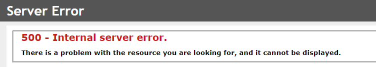
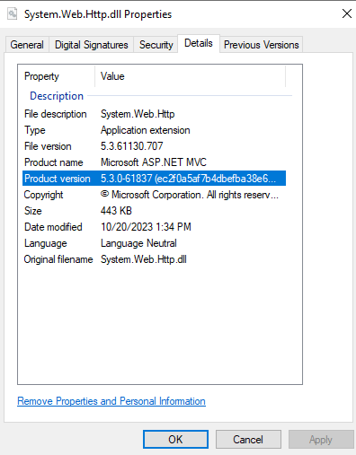

<div>
    <mat-card class="card">
        <mat-card-header>
            <mat-card-title>
                <h1 data-testid="header-title">IIS</h1>
            </mat-card-title>
        </mat-card-header>
        <mat-card-content>
            <div class="commentgrid">
                <div class="topics">
                    <div>
                        My experience with IIS after about a decade of use could be summed up as follows: <mat-icon
                            style="height: 3rem; width: 3rem; font-size:3rem; color: crimson;">sentiment_dissatisfied</mat-icon>
                        I am not a fan. I'm not sure <a routerLink="/core">Kestrel</a> is better yet. My exposure so
                        far, it seems to have a lot
                        of tribal knowledge like Ruby on Rails. E.g. you phrase something a certin way or put a file in
                        a specific spot and "Magic" happens.. I don't like that.
                        <br><br>This page will likely focus mostly on getting past <span class="important">stupid</span>
                        issues. Can you tell I'm a fan?
                        <ul>
                            <li>To deploy to a local IIS 10:
                                <ol>
                                    <li>Within Visual Studio, choose Right-click on web project and choose "Publish"
                                    </li>
                                    <li>Create a new configuration:
                                        Publish method: File system<br>
                                        Settings:<br>
                                        &nbsp;&nbsp;Delete all existing files prior to Publish<br>
                                        &nbsp;&nbsp;Exclude files from App_data folder
                                    </li>
                                    <li>Drop into IIS server expected <span class="file">wwwroot</span> folder</li>
                                    <li>Run <span class="comment">iisreset</span></li>
                                    <li>It works. You can now have a cup of tea.
                                        <ul>
                                            <li>Or more likely:
                                                <ul>
                                                    <li>You get a 500 error<br>
                                                        <br>Things
                                                        to check:
                                                        <ul>
                                                            <li>Check Event Viewer, it'll likely have a clue</li>
                                                            <li>If absolutely nothing is logged anywhere in the event
                                                                log yet you're getting a 500, look for this line from
                                                                web.config:<br>
                                                                <span class="comment">
                                                                    &lt;iisnode watchedFiles="web.config;*.js" /&gt;
                                                                </span>
                                                                In my case, removing this line allows IIS to get
                                                                further..
                                                            </li>
                                                        </ul>
                                                    </li>
                                                    <li>Could not load file or assembly '&lt;SOME ASSEMBLY&gt;,
                                                        Version=&lt;SOME VERSION&gt;, ... The located assembly's
                                                        manifest definition does not match the assembly reference.
                                                        <ul>
                                                            <li>This error indicates the assembly we have indicated in
                                                                the web.config file is specify a specific DLL and
                                                                although that DLL can be found on the machine, it's not
                                                                the required version.
                                                                <div class="code">
                                                                    <pre>
    &lt;dependentAssembly&gt;
        &lt;assemblyIdentity name="System.Web.Http" publicKeyToken="31bf3856ad364e35" culture="neutral" /&gt;
        &lt;bindingRedirect oldVersion="0.0.0.0-5.2.9.0" newVersion="5.2.9.0" /&gt;
    &lt;/dependentAssembly&gt;
                                                                    </pre>
                                                                </div>
                                                                <ul>
                                                                    <li>Option 1: Update "newVersion" to match new
                                                                        version:<br>
                                                                        <br>
                                                                            <div class="code">
                                                                                <pre>
    &lt;dependentAssembly&gt;
        &lt;assemblyIdentity name="System.Web.Http" publicKeyToken="31bf3856ad364e35" culture="neutral" /&gt;
        &lt;bindingRedirect oldVersion="0.0.0.0-<span class="important">5.3.0.0</span>" newVersion="<span class="important">5.3.0.0</span>" /&gt;
    &lt;/dependentAssembly&gt;
                                                                                </pre>
                                                                            </div>
                                                                    </li>
                                                                </ul>
                                                            </li>
                                                        </ul>

                                                    </li>
                                                </ul>
                                            </li>
                                        </ul>
                                    </li>
                                </ol>
                            </li>
                        </ul>
                    </div>

                    <div>
                        <h4>Tips</h4>
                        <ul>
                            <li>You need to run a x86 application in IIS: "Enable 32-Bit Application" must be set to
                                True within the application pool.
                            </li>
                        </ul>
                    </div>
                </div>
                <div><app-comment></app-comment></div>
            </div>
        </mat-card-content>
    </mat-card>
</div>